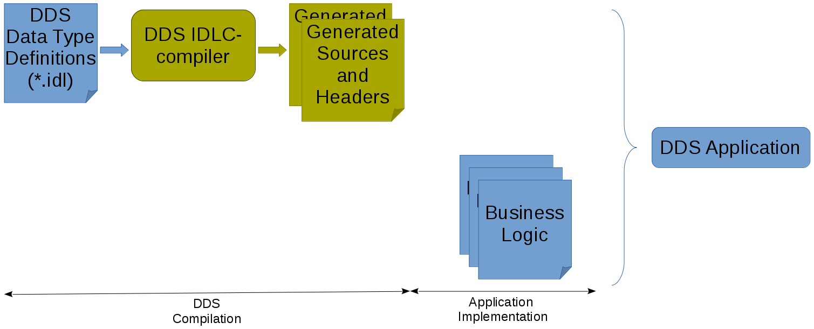

Building Eclipse Cyclone DDS applications
Building the Hello World! example
To test the installation, a small Hello World! application is used. This application will also be used as an introduction to DDS.
This chapter explains how to build this example, without details regarding the source code. The next chapter will explain what has to be done to code the Hello World! example.
The procedure used to build the Hello World! example can also be used for building your own applications.
- Windows
…
- Linux
It is advised to have copied the Eclipse Cyclone DDS examples to a user-friendly location as described in this paragraph when actively building the Eclipse Cyclone DDS examples on Linux. This chapter refers to the Eclipse Cyclone DDS examples installed in the user-defined location.
Build Files
Building With CMake
CMake
CMake is an open-source, cross-platform family of tools designed to build, test and package software. CMake is used to control the software compilation process using simple platform and compiler independent configuration files, and generate native makefiles and workspaces that can be used in the compiler environment of your choice.
In other words, CMake’s main strength is build portability. CMake uses the native tools, and other than requiring itself, does not require any additional tools to be installed. The same CMake input files will build with GNU make, Visual studio 6,7,8 IDEs, borland make, nmake, and XCode.
An other advantage of CMake is building out-of-source. It simply works out-of-the-box. There are two important reasons to choose this:
Easy cleanup (no cluttering the source tree). Simply remove the build directory if you want to start from scratch.
Multiple build targets. It’s possible to have up-to-date Debug and Release targets, without having to recompile the entire tree. For systems that do cross-platform compilation, it is easy to have up-to-date builds for the host and target platform.
There are a few other benefits to CMake, but that is out of the scope of this document.
Hello World! CMake (CycloneDDS Package)
Specifying how to build the Hello World! example requires only a few
lines of configuration in examples/helloworld/CMakeLists.txt
It will try to find the CycloneDDS CMake package. When it
has found it, every path and dependencies are automatically set.
After that, an application can use it without fuss. CMake will
look in the default locations for the code:CycloneDDS package.
The CycloneDDS package provides the ddsc library that
contains the DDS API that the application needs. It also provides a
component “idlc” that provides helper functionality for generating
library targets from IDL files (idlc_generate). These library
targets can be easily used when compiling an application that depends on
a data type described in an IDL file.
Two applications will be created, HelloworldPublisher
and HelloworldSubscriber. Both consist only out of one
source file.
Both applications need to be linked to the ddsc library
in the CycloneDDS package and HelloWorldData_lib
that was generated by the call to idlc_generate.
Hello World! Configuration
The Hello World! example is prepared to be built by CMake
through the use of its CMakeLists.txt file. The first
step is letting CMake configure the build environment.
It’s good practice to build examples or applications
out-of-source. In order to do that, create a build
directory in the examples/helloworld directory and go
there, making our location examples/helloworld/build.
Here, we can let CMake configure the build environment for us by typing:
cmake ..
Note
CMake does a pretty good job at guessing which generator to use, but some environments require that you supply a specific generator. For example, only 64-bit libraries are shipped for Windows, but CMake will generate a 32-bit project by default, resulting in linker errors. When generating a Visual Studio project keep in mind to append Win64 to the generator. The example below shows how to generate a Visual Studio 2015 project.
cmake -G "Visual Studio 14 2015 Win64" ..
Note
CMake generators can also create IDE environments. For instance, the “Visual Studio 14 2015 Win64” will generate a Visual Studio solution file. Other IDE’s are also possible, like Eclipse.
CMake will use the CMakeLists.txt in the helloworld directory to create makefiles that fit the native platform.
Since everything is prepared, we can actually build the applications (HelloworldPublisher and HelloworldSubscriber in this case).
Hello World! Build
After the configuration step, building the example is as easy as typing:
cmake --build .
Note
On Windows, it is likely that you have to supply the config of Visual Studio:
cmake --build . --config "Release"
while being in the build directory created during the
configuration step: examples/helloworld/build.
The resulting Publisher and Subscriber applications can be found in:
- Windows
examples\helloworld\build\Release.- Linux
examples/helloworld/build.
The Hello World! example can now be executed, like described in Test your installation, using the binaries that were just build. Be sure to use the right directories.
Summary
We’ve seen that a Eclipse Cyclone DDS application can be build by using a Makefile on Linux or a Visual Studio Solutions on Windows. Also CMake can be used to build a Eclipse Cyclone DDS application. In fact, it is the preferred way of building.
In the end, a predefined way of generating and building the source code should be followed when building Eclipse Cyclone DDS applications. The figure below shows how a typical Eclipse Cyclone DDS application is build.
{kind=link}
Next chapter will provide an overview of all steps mentioned in the figure above.